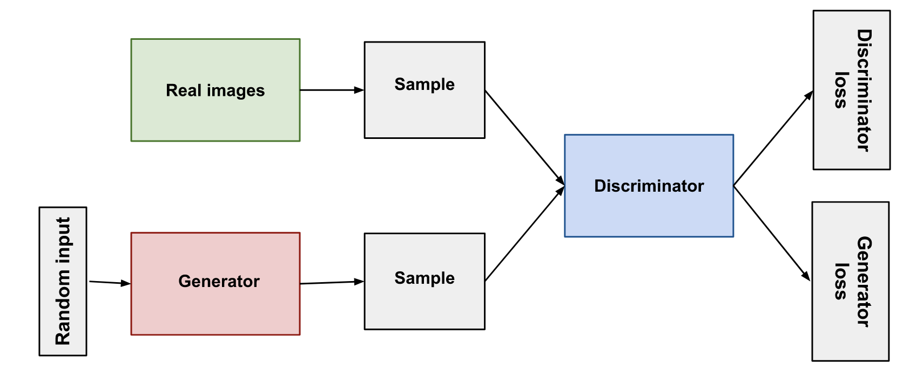

Generative Adversarial Network (GAN)s
Learning from the google developer page at this link .
Structure of GAN
GAN consists of two parts:
-
Generator:
- is a neural network.
- Training is done to produce output, that is as much plausible.
- generator output is connected to the discriminator input
-
Discriminator:
- is a neural network.
- Penalizes the Generator, if the output from generator is not plausible.
- through backpropagation, the discrimination provides signals that generator uses to update its weights.
Discriminator
- has two sources of data: real data and fake data.
- Real data are the positive examples from the real world.
- Fake data are the outputs generated from the generative part of GAN.
- During discriminator training, the weights of generator is kept constant, i.e. generator does not train.
-
During Training:
- Discriminator classifies real and fake data that is input into it
- it is penalized for misclassifying the inputs
- it computes the loss, and using backpropagation updates its weight
Generator
- creates data and feeds to the discriminator
- will reach success when discriminator classifies all outputs as true/real
- The generator loss penalizes the generator for producing a sample that the discriminator network classifies as fake.
- During training of the generator, the backpropagation starts at the output and flows back through the discriminator to the generator
- But only the weights of the generator are changed. The weights of the discriminator is unchanged.
Overall Training
- For GAN training, two distinct training must be done. And there are some tricks to updating weight as mentioned above.
-
Following is the summary of the overall steps:
- Train discriminator for one or more epochs
- Train generator for one or more epochs
- Repeat
- As the generator gets better with training, discriminator becomes worse as it cannot tell difference between the data generated or real data. If the generator is successful, the discriminator has 50% accuracy
- There are two major algorithms for loss function computation. Refer to page this for more detail.s